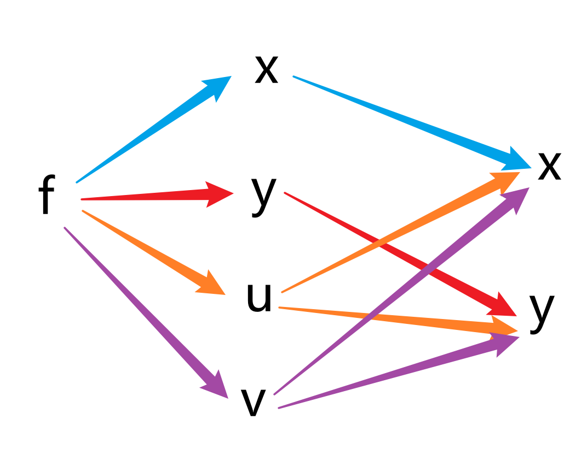

复合函数偏导
链式法则
设函数 u=φ(x),v=ψ(x) 在 x 处可导，函数 z=f(u,v) 在点 (u,v) 处可微，则复合函数 z=f(φ(x),ψ(x)) 在点 x 处可导，且有
dxdz=∂u∂zdxdu+∂v∂zdxdv
其中 dxdz 称为全导数。
证明：
对自变量 x 有增量 Δx，从而引起中间变量 u,v 的增量分别为
ΔuΔv=φ(x+Δx)−φ(x)=ψ(x+Δx)−ψ(x)
若 Δu=Δv=0，则 Δz=0，显然成立。
若二者不同时为零，由于 z=f(u,v) 可微，有
Δz=∂u∂zΔu+∂v∂zΔv+o(ρ)
其中 ρ=(Δu)2+(Δv)2
从而有
ΔxΔz=∂u∂zΔxΔu+∂v∂zΔxΔv+Δxo(ρ)
令 Δx→0，已知 u=φ(x),v=ψ(x) 可导，所以有
Δx→0limΔxΔuΔx→0limΔxΔv=dxdu=dxdv
由于 Δx→0limΔu=0,Δx→0limΔv=0，所以有 Δx→0limρ=0，从而有
Δx→0limΔxo(ρ)=Δx→0limsign(Δx)ρo(ρ)(Δx)2(Δu)2+(Δv)2=Δx→0limsign(Δx)ρo(ρ)(ΔxΔu)2+(ΔxΔv)2=(dxdu)2+(dxdv)2Δx→0limsign(Δx)ρo(ρ)=0(前面根号和后面 sign 函数有界，而 o(ρ) 是 ρ 的高阶无穷小)
从而有
dxdz=∂u∂zdxdu+∂v∂zdxdv
设函数 u=φ(x,y),v=ψ(x,y) 在 (x,y) 处可偏导，函数 z=f(u,v) 在点 (u,v) 处可微，则复合函数 z=f(φ(x,y),ψ(x,y)) 在点 (x,y) 处可偏导，且有
∂x∂z∂y∂z=∂u∂z∂x∂u+∂v∂z∂x∂v=∂u∂z∂y∂u+∂v∂z∂y∂v
证明：
分别视 y,x 为常数，运用上面的链式法则即得证。
设函数 u=φ(x,y),v=ψ(x,y) 在 (x,y) 处可偏导，函数 f(x,y,u,v) 在点 (x,y,u,v) 处可微，则复合函数 z=f(x,y,φ(x,y),ψ(x,y)) 在点 (x,y) 处可偏导，且有
∂x∂z∂y∂z=∂x∂f+∂u∂f∂x∂u+∂v∂f∂x∂v=∂y∂f+∂u∂f∂y∂u+∂v∂f∂y∂v
这里需要指出，∂x∂f 的含义是对四元函数（x,y,u,v）关于 x 求偏导，而 ∂x∂z 含义是对二元函数（x,y）关于 x 求偏导。
抽象，难记。找了个网上的方法。
对于最难记的 Chain-Rule-3，画出下面的图

同色箭头相乘，异色箭头相加。下一层超过 2 个变量使用偏导，否则使用导数。对某个独立变量的偏导只需追溯所有最终指向它的箭头。从而有
∂x∂z=∂x∂f∂x∂x+∂u∂f∂x∂u+∂v∂f∂x∂v=∂x∂f⋅1+∂u∂f∂x∂u+∂v∂f∂x∂v=∂x∂f+∂u∂f∂x∂u+∂v∂f∂x∂v
隐函数
隐函数存在定理 1
设 P0(x0,y0)∈R2,G=Nδ(P0)，若
- 函数 F 在 G 上连续可微
- F(P0)=0
- Fy′(P0)=0
则存在 x0 的邻域 I=Nδ1(x0) 和唯一的函数 y=f(x) 使得
- 对任意 x∈I，有 F(x,f(x))=0
- f(x0)=y0
- f 在 I 上连续可微，且有
f′(x)=−Fy′(x,y)Fx′(x,y)
利用上面讲的方法，对隐函数方程两侧求导有
∂x∂Fdxdx+∂y∂Fdxdy=0
从而得到
dxdy=−∂y∂F∂x∂F=−Fy′(x,y)Fx′(x,y)
同理对三元函数有
隐函数存在定理 2
设 P0(x0,y0,z0)∈R3,G=Nδ(P0)，若
- 函数 F 在 G 上连续可微
- F(P0)=0
- Fz′(P0)=0
则存在 U={(x,y)∣∣x−x0∣<h,∣y−y0∣<k} 和唯一的函数 z=f(x,y) 使得
- 对任意 (x,y)∈U，有 F(x,y,f(x,y))=0
- f(x0,y0)=z0
- f 在 U 上连续可微，且有
∂x∂f=−Fz′(x,y,z)Fx′(x,y,z),∂y∂f=−Fz′(x,y,z)Fy′(x,y,z)
需要注意的一点，偏导不能像导数一样看成是微分的商（微商），偏导数记号 ∂x∂z 是一个整体。下面用一个例子进行具体解释。
对于隐函数 F(x,y,z)=0，且其满足隐函数存在定理条件，同时有 Fx′,Fy′,Fz′ 都不为零，那么根据隐函数存在定理 2，有
∂x∂z∂y∂x∂z∂y=(−Fz′Fx′)(−Fx′Fy′)(−Fy′Fz′)=−1
而非
∂x∂z∂y∂x∂z∂y写着玩，只是玩玩conceal=∂x∂z∂y∂x∂z∂y=∂y∂z∂z∂y=∂z∂z=1
我的理解是，偏导是成对存在的，不存在像微分这样单独的记号，也就是说没有 ∂x 这样的记号，因为并不知道这个玩意的含义是什么。但是却有 dx 这样的记号，因为微分是有明确的含义的。
对于方程组，有
隐函数存在定理 3
设 P0(x0,y0,u0,v0)∈R4,G=Nδ(P0)，若
- 函数 F,H 在 G 上连续可微
- F(P0)=H(P0)=0
- 雅可比行列式（Jacobi Determinant）
J=D(u,v)D(F,H)=Fu′Hu′Fv′Hv′P0=0
则存在 U={(x,y)∣∣x−x0∣<h,∣y−y0∣<k} 和唯一一组函数 u=u(x,y),v=v(x,y)，使得
- 对任意 (x,y)∈U，有 F(x,y,u(x,y),v(x,y))=0,H(x,y,u(x,y),v(x,y))=0
- u(x0,y0)=u0,v(x0,y0)=v0
- u,v 在 U 上连续可微，且有
∂x∂u∂x∂v=−JD(x,v)D(F,H),∂y∂u=−JD(u,x)D(F,H),∂y∂v=−JD(y,v)D(F,H)=−JD(u,y)D(F,H)
查阅了相关资料，为了更好地理解上面的定理，引入雅可比矩阵。
设 f:Rn→Rm，定义 f 的雅可比矩阵 J 为代表 f 的从 Rn 到 Rm 的线性变换的矩阵。
则 J 为 m×n 阶矩阵，且有 Jij=∂xj∂fi，即
J=[∂x1∂f⋯∂xn∂f]=∂x1∂f1⋮∂x1∂fm⋯⋱⋯∂xn∂f1⋮∂xn∂fm
还是不太好看懂，重新理解一下多元函数。
先从简单的出发，设二元函数 f:R2→R2，可以看作是 (u,v)→(F,G)，其中 F,G:R2→R。
令 P(u,v),Q(F,G)，从而有
dF=∂u∂Fdu+∂v∂Fdv,dG=∂u∂Gdu+∂v∂Gdv
写成向量形式，即
[dFdG]=du∂u∂F∂u∂G+dv∂v∂F∂v∂G=∂u∂F∂u∂G∂v∂F∂v∂G[dudv]
可以发现这个矩阵就是雅可比矩阵，即
dQ=JdP
然后就是多元函数，设 f:Rn→Rm，可以看作是 x→y，其中 x=(x1,⋯,xn),y=(y1,⋯,ym)，且 yi=fi(x1,⋯,xn)，即 yi:Rn→R。
同样的，令 x=(x1,⋯,xn),y=(y1,⋯,ym)，从而有
dy1dym=i=1∑n∂xi∂y1dxi⋮=i=1∑n∂xi∂ymdxi
写成向量形式，即
dy=dy1⋮dym=i=1∑ndxi∂xi∂y=i=1∑ndxi∂xi∂y1⋮∂xi∂ym=∂x1∂y1⋮∂x1∂ym⋯⋱⋯∂xn∂y1⋮∂xn∂ymdx1⋮dxn=Jdx
再去看看多元函数的复合函数。设 f:Rn→Rm,g:Rm→Rl，则有 g∘f:Rn→Rl，即 x→z，其中 z=g(f(x))。
dz=Jgdy=JgJfdx
写到这，我陷入了沉思，这与隐函数存在定理 3 有关联吗，我好像只是理解了一下雅可比矩阵的意义。没草稿纸（懒得拿），试着像定理 1 一样尝试理解内涵。
还好只有两个方程，即
{F(x,y,u,v)=0H(x,y,u,v)=0
先对 x 求偏导得
⎩⎨⎧∂x∂F+∂u∂F∂x∂u+∂v∂F∂x∂v∂x∂H+∂u∂H∂x∂u+∂v∂H∂x∂v=0=0
不是很清晰，我稍微调换一下位置，然后高亮一些部分
⎩⎨⎧∂u∂F∂x∂u+∂v∂F∂x∂v∂u∂H∂x∂u+∂v∂H∂x∂v=−∂x∂F=−∂x∂H
这下就是线代学过最简单的二元一次方程组了，使用克莱姆法则，同时注意到分母的行列式是
∂u∂F∂u∂H∂v∂F∂v∂H
这不是巧了吗，正好是雅可比行列式。然后这学期没线代，只记得个分母了，差点忘了克莱姆法则怎么弄，想着形式感觉不大对，还拿出草稿纸准备算算。
对于某一列变量，使用等号右侧的值替代掉行列式的那一列系数，那么就有两个行列式
−∂x∂F∂x∂H∂v∂F∂v∂H,−∂u∂F∂u∂H∂x∂F∂x∂H
这也正好就分别是 −D(x,v)D(F,H) 和 −D(u,x)D(F,H)（这个记号的含义是什么我也不清楚，教材用了这个，网上一些资料还用 −∂(x,v)∂(F,H)），然后就是隐函数存在定理 3 的结论了。
理解了过程，也就方便进行记忆了（并不，还是蛮难记的）。
下面再补充一点，只不过要是觉得写的不好就删掉了。
写到方程组就直接用克莱姆法则解出来了，没啥意思，用矩阵表示看看会不会有什么新发现（没有就删了）。
∂u∂F∂u∂H∂v∂F∂v∂H∂x∂u∂x∂v=−∂x∂F∂x∂H
对 y 的偏导，由于类似，我上面进行了省略，而用矩阵表示的话，就可以添加回来，变成
∂u∂F∂u∂H∂v∂F∂v∂H∂x∂u∂x∂v∂y∂u∂y∂v=−∂x∂F∂x∂H∂y∂F∂y∂H
从而有
∂x∂u∂x∂v∂y∂u∂y∂v=−∂u∂F∂u∂H∂v∂F∂v∂H−1∂x∂F∂x∂H∂y∂F∂y∂H
出现了，雅可比矩阵的逆！这让我想到了什么呢？嗯……什么也没有。那就到此结束吧。
多元函数泰勒公式
二元函数的泰勒公式
设 (x0,y0)∈R2，函数 f 在点 (x0,y0) 的某邻域 G 内 n+1 阶连续可微，则对任意 (x,y)∈G，有
f(x,y)=k=0∑nk!1(Δx∂x∂+Δy∂y∂)kf(x0,y0)+Rn(1)
这里
Rn=(n+1)!1(Δx∂x∂+Δy∂y∂)n+1f(x0+θΔx,y0+θΔy),Δx=x−x0,Δy=y−y0(0<θ<1).
式 (1) 称为 f(x,y) 在点 (x0,y0) 处的 n 阶泰勒公式，Rn 称为泰勒公式的拉格朗日余项余项。
(Δx∂x∂+Δ∂y∂)k=s=0∑k(sk)Δxk−sΔys∂xk−s∂ys∂k
证明：
取辅助函数
F(t)=f(x0+tΔx,y0+tΔy)(0⩽t⩽1)
既然 f 在点 (x0,y0) 的某邻域 G 内 n+1 阶连续可微，那么 F 在 [0,1] 上 n+1 阶连续可微。根据一元函数的泰勒公式，有
F(0)F′(0)F(n)(0)=f(x0,y0)=dtdft=0=∂x∂fdtdx+∂y∂fdtdyt=0=Δx∂x∂f+Δy∂y∂f(x0,y0)=(Δx∂x∂+Δy∂y∂)f(x0,y0)⋮=dtndnft=0=s=0∑ndtn1(dx∂x∂+dy∂y∂)nf(x0,y0)=s=0∑n(dtdx∂x∂+dtdy∂y∂)nf(x0,y0)=s=0∑n(Δx∂x∂+Δy∂y∂)nf(x0,y0)
然后就是一元函数的泰勒公式了
F(t)=k=0∑nk!1F(k)(0)tk+Rn(t)=k=0∑nk!1(Δx∂x∂+Δy∂y∂)kf(x0,y0)tk+Rn(t)
代入 t=1 即得证。
对比一元函数泰勒公式，辅助记忆
f(x)=k=0∑nk!f(k)(x0)Δxk+Rn(x)
其中 Rn(x)=(n+1)!f(n+1)(ξ)Δxn+1，ξ 介于 x 与 x0 之间。
二元函数拉格朗日中值公式
令 n=0，有
f(x,y)=f(a,b)+fx′(ξ,η)(x−a)+fy′(ξ,η)(y−b)
其中 ξ=a+θ(x−a),η=b+θ(y−b)(0<θ<1)。
多元向量函数
设 D⊆Rn，函数 f,g,h 是定义在 D 上的 n 元函数，称
A(x1,x2,⋯,xn)=(f(x1,x2,⋯,xn),g(x1,x2,⋯,xn),h(x1,x2,⋯,xn))
为三维空间 R3 的 n 元向量函数。
好像提过
记得在上篇提过……
设二元向量函数
r(u,v)=(x(u,v),y(u,v),z(u,v))
其中 (u,v)∈G,G⊆R2，设 (u0,v0) 是 G 的聚点，若存在 a∈R3 使得
(u,v)→(u0,v0)lim∣r(u,v)−a∣=0
则称向量函数 r(u,v) 在 (u,v)→(u0,v0) 时以 a 为极限，记作
(u,v)→(u0,v0)limr(u,v)=a
向量函数 r(u,v)=(x(u,v),y(u,v),z(u,v)) 在 (u,v)→(u0,v0) 时以 a= (a1,a2,a3) 为极限的充要条件是
(u,v)→(u0,v0)limx(u,v)=a1,(u,v)→(u0,v0)limy(u,v)=a2,(u,v)→(u0,v0)limz(u,v)=a3
设二元向量函数
r(u,v)=(x(u,v),y(u,v),z(u,v))
在点 (u,v) 的某邻域内有定义，若极限
Δu→0limΔur(u+Δu,v)−r(u,v)
存在，则称此极限为 r(u,v) 对 u 的偏导数，记作 ∂u∂r 或 ru′(u,v)。
设二元向量函数
r(u,v)=(x(u,v),y(u,v),z(u,v))
在点 (u,v) 的某邻域内有定义，函数 x(u,v),y(u,v),z(u,v) 在点 (u,v) 处对 u 的偏导数存在，则向量函数 r(u,v) 在 (u,v) 处对 u 的偏导数存在，且
ru′=(xu′(u,v),yu′(u,v),zu′(u,v))
方向导数
设 P0∈R3，函数 f 在 P0 的某邻域内有定义，l 是 R3 中的一个非零向量，且 ∀P∈U，都有 P0P 与 l 的方向相同，若
P→P0lim∣P0P∣f(P)−f(P0)
存在，则称此极限为函数 f 在点 P0 沿方向 l 的方向导数，记作 ∂l∂f(P0)。
方向导数都存在无法推出可偏导（大概是因为同一个方向上正向负向可以存在而不同，而偏导要求在那个方向上正向负向存在且相等）；可偏导无法推出方向导数都存在。
函数可偏导只能推出该函数沿坐标轴方向的导数存在，而不能推出该函数沿其他方向的方向导数存在。
设函数 f(x,y,z) 在 (x,y,z) 处可微，向量 l 的方向余弦分别为 cosα,cosβ,cosγ，则函数 f(x,y,z) 在点 (x,y,z) 沿方向 l 的方向导数为
∂l∂f(x,y,z)=fx′(x,y,z)cosα+fy′(x,y,z)cosβ+fz′(x,y,z)cosγ
证明：
链式法则有
∂l∂f(x)=dtdt=0f(x+tl)=dtdt=0f(x+tcosα,y+tcosβ,z+tcosγ)=fx′(x,y,z)cosα+fy′(x,y,z)cosβ+fz′(x,y,z)cosγ
梯度
上面最后一个定理可以写成
∇f⋅l
其中
∇f=(∂x∂f,∂y∂f,∂z∂f)
称为函数 f(x,y,z) 的梯度（Gradient），记作 ∇f 或 gradf 或 ∂x∂fi+∂y∂fj+∂z∂fk。
沿梯度方向，函数方向导数取得最大值，且最大值为梯度的模。
因为方向导数
∂l∂f=∇f⋅l=∣∇f∣⋅cosθ
其中 θ 为 ∇f 与 l 的夹角，所以 ∣∇f∣ 为最大值，在 θ=0 时取得。